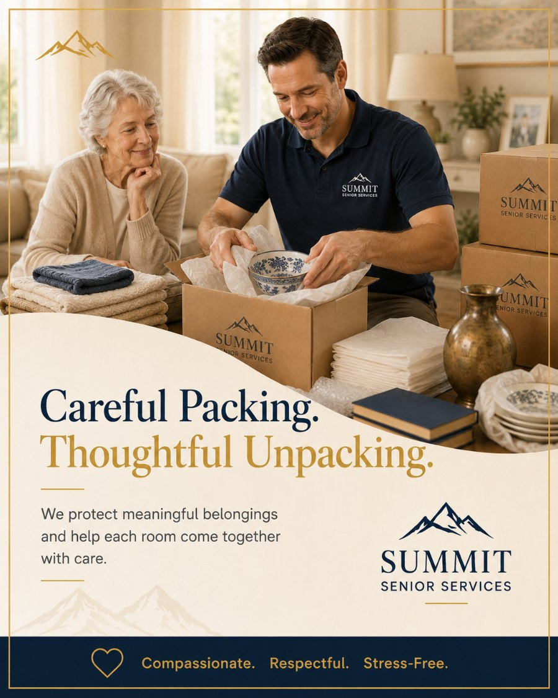

Let us handle the boxes.
The free in-home consultation is the easiest way to start. No pressure, no obligation — just a conversation about what's needed and what's possible.
BrianFounder, Summit Senior Services
Careful, fragile-grade packing of an entire home or just the rooms you choose — and full unpacking and setup at the new place, so your loved one walks in to a home that's ready, not a wall of boxes.

Anyone can fill a box. The care is in how the fragile heirlooms are wrapped, how clearly everything is labeled, and whether the new home is actually set up when the day is done — or just stacked floor to ceiling with cartons your parent now has to face alone.
We pack with fragile-grade materials and a system that survives the move. Every box is labeled by room and contents, so unpacking is calm and logical instead of a scavenger hunt. China, glass, art, and keepsakes get the slow, protective handling they deserve.
And we don't stop at the curb. Our team unpacks at the new home, places furniture, makes the beds, sets up the kitchen, and clears away every empty box and scrap of paper. The goal is simple: your loved one arrives to a home that already feels lived-in.
Choose a full-home pack or just the rooms you'd rather not tackle. Either way, we close the loop at the new home.
Hand us the whole house or just the kitchen and the china cabinet. We scale to exactly what you want help with — nothing more, nothing less.
Dish packs, glass cells, wardrobe boxes, acid-free tissue, and proper cushioning. The right materials are why the right things arrive whole.
Every box is labeled by destination room and contents. Unpacking becomes orderly and quick instead of an exhausting guessing game.
Artwork, antiques, fine china, and irreplaceable keepsakes are wrapped and handled individually, with extra protection and a careful pair of hands.
At the new home we unpack, place furniture, fill the closets and cabinets, and make the beds — so the space is functional from the first night.
Empty boxes, packing paper, and tape disappear with us. Your loved one is never left to wrestle a mountain of cardboard to the curb.
A packing project runs on a tight, predictable rhythm so move day is smooth on both ends.
We confirm what's being packed, what's staying behind, and which fragile items need special handling — then bring the right materials.
Room by room, we pack carefully and label every box by destination and contents, photographing anything especially valuable.
Boxes are staged and protected for the move, whether we're handling the move ourselves or coordinating with movers.
At the new home we unpack, place, organize, and remove all debris — finishing with the beds made and the kitchen usable.
You don't pick up a single box. You point to what matters, and we handle the wrapping, the carrying, and the careful work.
When the move-in date is fixed and you live out of town, a professional pack means it gets done right and on time — without you taking off work.
We coordinate with the sorting plan so we pack only what's making the move — no wasted boxes, no second-guessing at the new home.
We pack it, move it, unpack it, and haul away every scrap. Let's talk about how much you'd like us to handle.
Most families use more than one of our services. Here are the ones that pair most naturally with packing & unpacking.
Packing cost depends on the size of the home, how much needs packing, and the fragility of the contents. We don't sell fixed packages — after a free in-home consultation you'll get a clear written quote for exactly the help you want. No surprises, no hidden fees.
The free in-home consultation is the easiest way to start. No pressure, no obligation — just a conversation about what's needed and what's possible.